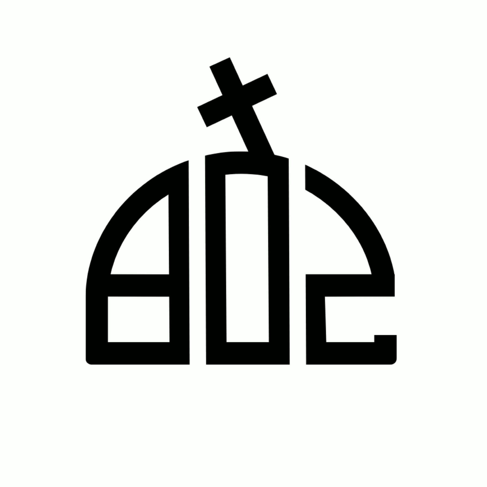

Csapatunk 4. osztálytól fogadja a cserkészkedni vágyó gyerekeket, Gödöllőről és környékéről.
Keresd bátran az osztályodnak megfelelő rajparancsnokot!
Mexikói Badargomba raj
Azúrkék Galambgomba raj
Császárgomba raj
Mozdonyfüstszagú Pókhálósgomba raj
Rókagomba raj